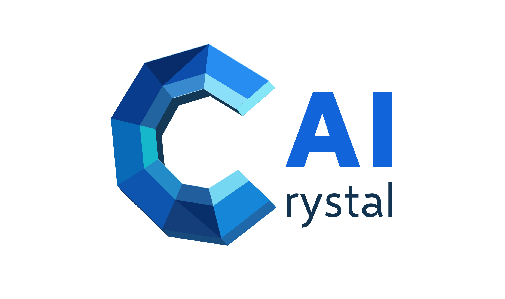

能填多少填多少。不清楚的项目可以留空，后续不会为同一项反复提问。
已有实验文件会先由程序检查。这里补充你的化学背景、样品外观和处理偏好。全部内容只在本地生成；填写或保存表单不会上传晶体数据。
填写示例：绿色，块状，0.050 × 0.051 × 0.052 mm这里只展示填写格式，请填写这颗晶体的实际信息；不清楚的项目可留空，示例不会自动填入。
未知外观可在草稿中注明项目默认值“无色、块状、0.120 × 0.122 × 0.125 mm”，但不会把默认值冒充实测值写入官网验证 CIF。
SQUEEZE 用于有证据支持的难建模溶剂贡献。主体、必要反离子和与主体耦合的无序仍需正确处理。选择“允许尝试”后，不会在每一步重复索取同类授权。
把保存的 cairystal-intake.json 放入本次任务目录，或交给助手。已有回答可载入复用；请勿把另一颗晶体的外观和尺寸沿用过来。